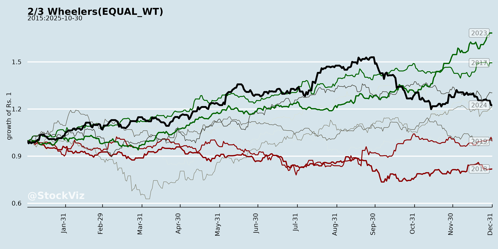
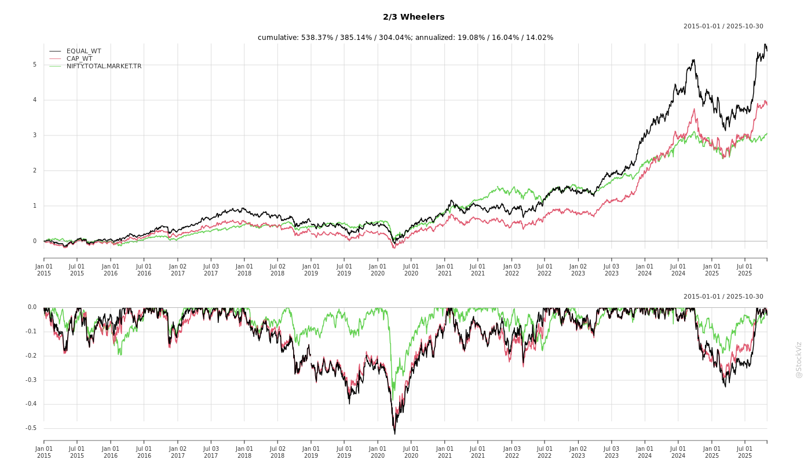
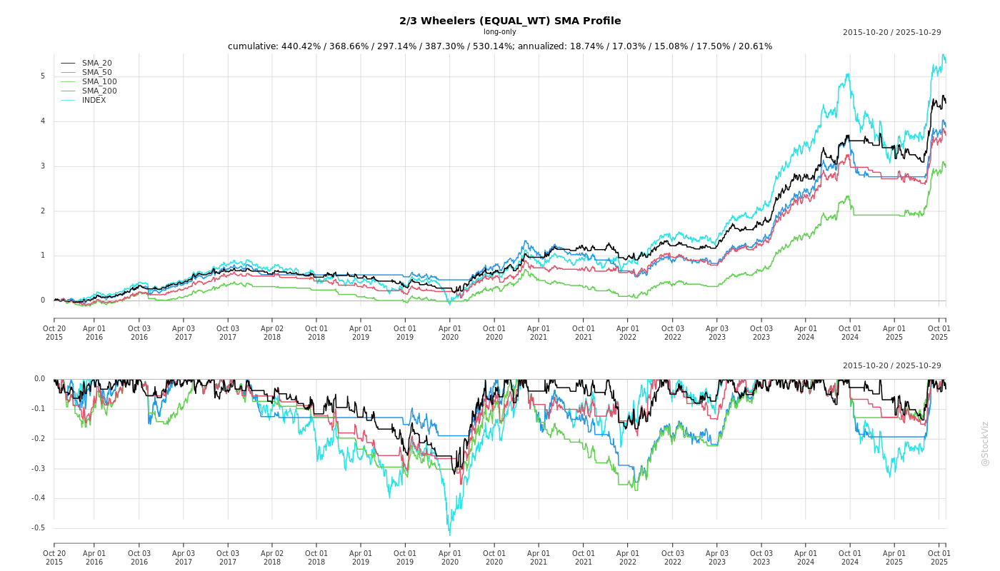
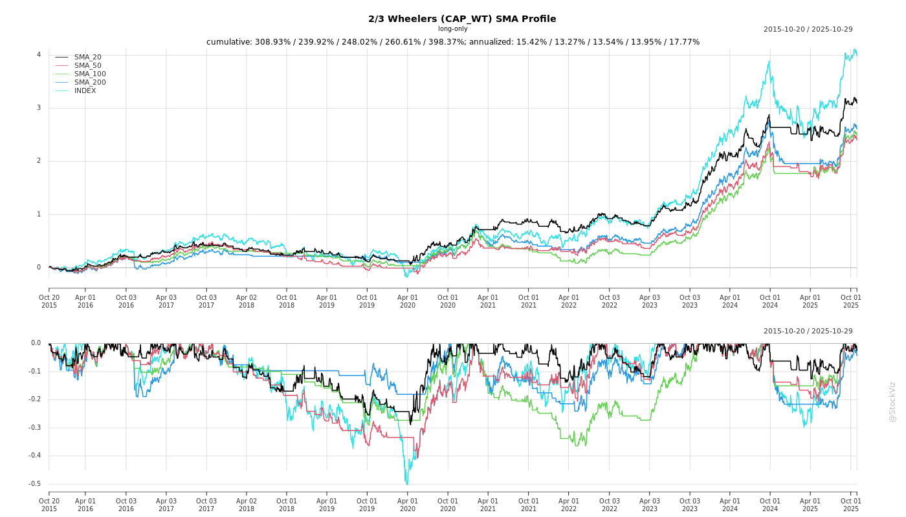
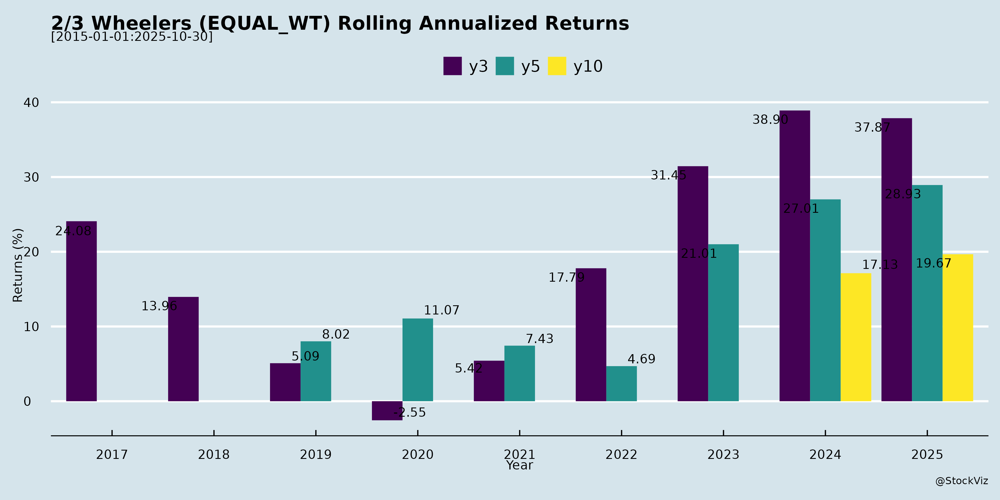

asof: 2025-12-03
Summary Analysis: Indian 2/3-Wheeler Sector (Based on Provided Disclosures)
The provided documents are SEBI Regulation 30 compliance filings from key players in the Indian 2/3-wheeler industry—TVS Motor, Bajaj Auto, Eicher Motors, Hero MotoCorp, Ather Energy, and Ola Electric—detailing scheduled investor/analyst meetings, plant visits, and group interactions in late November to early December 2025. These disclosures reflect heightened institutional interest amid routine investor roadshows (e.g., BofA Boardroom Series, Macquarie/JP Morgan events). No financials or UPSI are shared, but the clustering of physical/virtual engagements signals proactive management outreach. Below is a structured analysis of headwinds, tailwinds, growth prospects, and key risks, inferred from the volume, nature, and participants of these events.
Tailwinds (Positive Drivers)
Headwinds (Challenges)
Growth Prospects
Key Risks
Overall Summary: These disclosures portray a bullish investor sentiment with proactive engagement as a key tailwind, positioning the sector for EV-led growth despite routine operational headwinds. No red flags emerge, but monitor post-meet outcomes for strategic insights. Sector PE multiples likely supported by 15-20% earnings growth trajectory. For deeper analysis, await earnings transcripts.
asof: 2025-12-01
Summary Analysis: Indian 2/3-Wheeler Industry (Based on Q3 FY25 Results of TVS Motor, Hero MotoCorp, and Ola Electric)
The Indian 2/3-wheeler sector shows resilient demand with volume/revenue growth led by ICE players (TVS, Hero), while EV pure-play Ola scales revenue but deepens losses amid execution challenges. Industry sales ~42L units in 9M FY25 (up ~10-15% YoY inferred from samples). Key metrics:
| Company | Q3 Vol/Sales (L units/₹ Cr) | Q3 Rev YoY | Q3 PAT YoY | 9M PAT YoY |
|---|---|---|---|---|
| TVS (Standalone) | 12.12L | +10% | +4% | +16% |
| Hero (Standalone) | 14.64L | +5% | +12% | +20% |
| Ola (Consol.) | ~1L (inf.) | -20%* | Loss ↑ | Loss ↑ |
_*Ola YoY unaudited; revenue down Q3 but 9M +14%._
Tailwinds (Positive Drivers)
Headwinds (Challenges)
Growth Prospects
Key Risks
Overall Outlook: ICE leaders (Hero/TVS) stable-profitable; EV pivot offers 20%+ growth but with volatility. Sector poised for 12-15% FY25 growth, led by premiums/EVs, but monitor EV quality/macro. Hero/TVS: Buy/Hold; Ola: High-Risk Growth.
asof: 2025-12-03
Summary Analysis: Indian 2/3 Wheeler Sector (Based on Provided Filings)
The filings from key players (TVS Motor, Bajaj Auto, Eicher Motors, Hero MotoCorp, Ather Energy, Ola Electric) highlight a maturing sector amid EV transition challenges. Traditional ICE leaders (Hero, Bajaj, TVS, Eicher) focus on procedural disclosures (divestments, debt, penalties, associate IPOs), while EV pure-plays (Ola, Ather) emphasize compliance and operational ramps. Ola’s Q2 FY26 shareholders’ letter provides the deepest sector insights, revealing an EV 2W slowdown but profitability inflection. Overall, the sector balances ICE stability with EV growth pains.
Headwinds (Key Challenges)
Tailwinds (Supportive Factors)
Growth Prospects
Key Risks
| Risk Category | Details | Mitigation (from Filings) |
|---|---|---|
| Market/Competition | Prolonged slowdown; discounting wars (Ola notes OEMs sacrificing profits). | Margin focus (Ola: profitability > share); premium products (Gen3 platform). |
| Execution/Operational | Cell ramp delays; capex overruns (Ola: ₹100-150Cr H2 FY26 Auto; Gigafactory debt-financed). Warranty/service costs. | Vertical integration; HyperService for cost reduction. |
| Regulatory/Financial | Approvals delays (TVS sale); penalties (Eicher); debt burdens (Bajaj NCDs; Ola interest obligations). Incentive cuts. | Appeals (Eicher); PLI/project finance (Ola). |
| Macro | Festive flatness persists; EV penetration stalls (~3-4% per Ola graphs). Forex/rare-earth dependency. | Diversification (energy); in-house tech (ferrite motor, ADAS). |
Overall Verdict: Sector faces near-term headwinds from EV slowdown/competition but strong tailwinds from profitability shifts and diversification (e.g., Ola’s Auto-to-Energy pivot). Growth hinges on execution amid risks; traditional players provide stability while EV innovators drive upside. Bullish long-term on localization/PLI, but monitor Q3 volumes for sustained momentum.
asof: 2025-12-03
Summary Analysis: Indian 2/3 Wheeler Sector (Based on Provided Disclosures)
The provided documents are SEBI Regulation 30 disclosures from key players—TVS Motor, Bajaj Auto, Eicher Motors, Hero MotoCorp, Ather Energy, and Ola Electric—detailing upcoming investor/analyst meetings, plant visits, and group interactions in late Nov–early Dec 2025. These indicate elevated investor engagement but contain no financials, UPSI, or operational details (all explicitly state no UPSI will be shared). Analysis is thus inferred from meeting volume, participants, formats, and themes.
Tailwinds
Growth Prospects
Headwinds
Key Risks
Overall: Documents reflect bullish investor appetite (tailwind dominant), positioning the sector for growth via EV infra and premium bikes. However, risks center on execution amid competition. Monitor post-meet transcripts for guidance. Sector PE likely supported at 25–35x FY26E amid 12–15% earnings growth.
asof: 2025-12-01
The filings from key players (TVS Motor, Bajaj Auto, Eicher Motors/Royal Enfield, Hero MotoCorp, Ather Energy, Ola Electric) reflect a robust recovery and growth phase post-festive demand surge, with ICE (Internal Combustion Engine) dominance persisting alongside accelerating EV adoption. Hero MotoCorp leads with record revenues (₹12,126 Cr Q2, +16% YoY), market share gains (40 bps festive), and EV traction via VIDA. Eicher shows strong profitability (PAT ₹1,369 Cr Q2 consolidated). Legacy players report healthy profits/margins, while EV pure-plays (Ather, Ola) scale revenues but remain loss-making. Approvals for fundraising (Ola) and RPTs (Bajaj) signal capex continuity. Overall sector volumes ~16-30L units/quarter, with exports/EV as bright spots.
| Risk Category | Details | Mitigants |
|---|---|---|
| Execution/Financial | EV cash burn (Ather H1 loss ₹3.3 Bn); high debt (Ather borrowings ₹2.7 Bn). Hero tax demands (₹178 Cr). | Strong ICE cashflows fund EV; IPO infusions (Ather ₹26 Bn). |
| Regulatory/Policy | ELV EPR unquantifiable; incentive deferrals (Ather); FPI voting curbs (Bajaj). | Industry lobbying; phased compliance. |
| Supply/External | China magnet ban; forex volatility (Eicher OCI swings). Commodity inflation. | Diversification (Hero global parts); hedging. |
| Competition/Market | Intense EV rivalry (Ola/Ather/Hero VIDA); festive dependence (80% annual sales). | Differentiation (Hero affordability; Eicher premium). |
| Operational | PMP deviations; capex overruns (Ather ₹2.2 Bn Q2). Talent churn (Hero CS exit). | Fundraising (Ola approved); ESOPs. |
Overall Outlook: Bullish with caution. Sector poised for 12-15% CAGR FY26-28 on ICE stability + EV inflection (~30% sector growth). Legacy players (Hero/Eicher) de-risked; EV firms high-beta (scale or perish). Monitor ELV/China risks quarterly.
asof: 2025-12-03
Summary Analysis: Indian 2/3-Wheeler Sector (Based on Provided Announcements)
The Indian 2/3-wheeler industry demonstrates robust momentum in late 2025, driven by post-festive demand, export surges, premium product launches, and EV scaling. Companies like Hero MotoCorp (+31% Nov sales), Eicher (+45% RE volumes), Bajaj (+8% total), TVS-BMW (200k unit milestone), Ather (+67% Q2 volumes), and Ola (service innovations) reflect a mix of ICE and EV strength. Overall YTD growth ~5-10% across majors, with exports as a key bright spot. However, patchy domestic ICE performance signals competitive pressures.
| Aspect | Key Highlights |
|---|---|
| Tailwinds | Post-festive momentum, rural revival, GST rationalization (<350cc boost), strong exports (+14-70%), EV ecosystem buildout (charging/service), premium launches (e.g., BMW F450 GS, RE 650s). |
| Headwinds | Soft domestic ICE sales (Bajaj 2W -1% Nov/-5% YTD), festive dependency, regional disparities (strong South/Middle India, softer elsewhere). |
| Growth Prospects | EV market share gains (Ather 17.4%), global expansion (100+ markets for TVS-BMW), YTD totals scaling (Hero 4.3M units), new platforms/tech (Rizta, VX2, Hyperservice). Projected 10-15%+ sector growth into FY26. |
| Key Risks | Intense EV competition, EBITDA/profitability pressures (Ather losses narrowing but persistent), supply chain/export volatility, regulatory shifts post-GST reforms. |
Tailwinds (Positive Drivers)
Headwinds (Challenges)
Growth Prospects
Key Risks
Overall Outlook: Bullish near-term (10-15% FY26 growth) with tailwinds from exports/EV/policy outweighing headwinds. EVs are the growth engine (17%+ shares), but ICE majors provide stability. Monitor domestic retail and EBITDA trends for sustained momentum. Sector poised for premium/global leadership, per TVS-BMW/Eicher narratives.
Copyright © 2023 SAS Data Analytics Pvt. Ltd. All rights reserved.